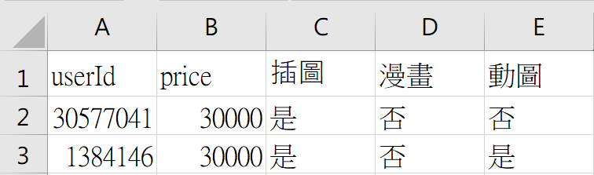

1.爬取Pixiv上繪師的追蹤者id
使用Cookie登入，爬取Pixiv上繪師(此以用戶id: 45176599 為例)的追蹤者id，並輸出 userId_of_following.csv。
範例繪師之Pixiv
2.異步爬取Pixiv繪師之所有插圖
使用Asyncio、BeautifulSoup，異步爬取Pixiv上繪師(此以用戶id: 45176599 為例)之所有插圖，並以Tqdm顯示當前進度條。
3.異步爬取Pixiv追蹤者之委託狀況
讀取 userId_of_following.csv，使用Asyncio、BeautifulSoup，異步爬取Pixiv上繪師(此以用戶id: 45176599 為例)的追蹤者之委託狀況
，並以Tqdm顯示當前進度條，並輸出 pixiv_request.csv。。(委託類型:插圖、漫畫、動圖)
異步爬取Pixiv追蹤者之委託狀況 演示影片:
pixiv_request.csv 之部分內容:

4.爬取寶可夢圖片
爬取網站全圖鑑898隻寶可夢之圖片，並依照格式存檔。(命名格式:編號_名稱.png)
範例寶可夢全圖鑑
爬取寶可夢圖片 演示影片:
5.自動登入104人力銀行
以Python Selenium 自動登入104人力銀行網站。
目標文檔。
1.辭典解釋/例句斷詞
1.1利用正則表達式從目標文檔擷取解釋和例句。
1.2使用jieba套件對解釋和例句進行斷詞，並且清除不需要的停用詞。
2.辭典解釋/例句斷詞統計分析
依據詞頻的高低對斷詞結果進行分級。
統計出已分類詞數(不含重複)、未分類詞數(不含重複)、總詞數(不含重複)、總詞數(含重複)之比例。